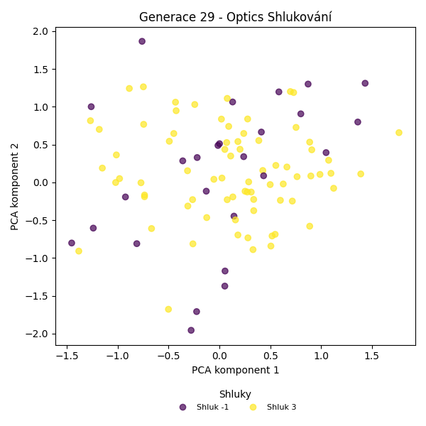
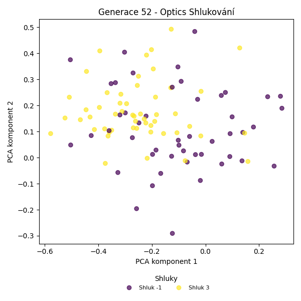

Optics shlukování – Vývoj
Generace 0
Generace 1
Stabilita mezi generací 0 → 1:
Shluk 0 → 0: 16 jedinců (69.6 %)
Shluk 0 → -1: 6 jedinců (26.1 %)
Shluk 0 → 2: 1 jedinců (4.3 %)
Shluk 1 → -1: 11 jedinců (33.3 %)
Shluk 1 → 0: 17 jedinců (51.5 %)
Shluk 1 → 3: 5 jedinců (15.2 %)
Shluk -1 → -1: 26 jedinců (68.4 %)
Shluk -1 → 0: 12 jedinců (31.6 %)
Shluk 2 → 2: 5 jedinců (83.3 %)
Shluk 2 → 0: 1 jedinců (16.7 %)
Jaccardovo mapování a overlap: Generace 0 → 1
- Shluk 0 → 0 (Jaccard: 0.30, Overlap: 0.70)
- Shluk 1 → 0 (Jaccard: 0.27, Overlap: 0.52)
- Shluk 2 → 2 (Jaccard: 0.71, Overlap: 0.83)
Posun centroidů mezi generací 0 → 1:
- Shluk 0: 3.1619
- Shluk 1: 7.4620
- Shluk 2: 10.2223
Generace 2
Stabilita mezi generací 1 → 2:
Shluk 0 → -1: 45 jedinců (97.8 %)
Shluk 0 → 3: 1 jedinců (2.2 %)
Shluk -1 → -1: 43 jedinců (100.0 %)
Shluk 2 → -1: 6 jedinců (100.0 %)
Shluk 3 → 3: 4 jedinců (80.0 %)
Shluk 3 → -1: 1 jedinců (20.0 %)
Jaccardovo mapování a overlap: Generace 1 → 2
- Shluk 0 → 3 (Jaccard: 0.02, Overlap: 0.20)
- Shluk 2 → žádný vhodný přechod
- Shluk 3 → 3 (Jaccard: 0.67, Overlap: 0.80)
Posun centroidů mezi generací 1 → 2:
- Shluk 0: 7.6110
Generace 3
Stabilita mezi generací 2 → 3:
Shluk -1 → -1: 91 jedinců (95.8 %)
Shluk -1 → 3: 4 jedinců (4.2 %)
Shluk 3 → -1: 5 jedinců (100.0 %)
Jaccardovo mapování a overlap: Generace 2 → 3
- Shluk 3 → žádný vhodný přechod
Posun centroidů mezi generací 2 → 3:
- Shluk 0: 10.5858
Generace 4
Stabilita mezi generací 3 → 4:
Shluk -1 → 4: 4 jedinců (4.2 %)
Shluk -1 → -1: 27 jedinců (28.1 %)
Shluk -1 → 3: 65 jedinců (67.7 %)
Shluk 3 → 3: 4 jedinců (100.0 %)
Jaccardovo mapování a overlap: Generace 3 → 4
- Shluk 3 → 3 (Jaccard: 0.06, Overlap: 1.00)
Posun centroidů mezi generací 3 → 4:
- Shluk 0: 7.0821
Generace 5
Stabilita mezi generací 4 → 5:
Shluk 4 → -1: 2 jedinců (50.0 %)
Shluk 4 → 3: 2 jedinců (50.0 %)
Shluk -1 → 3: 8 jedinců (29.6 %)
Shluk -1 → -1: 19 jedinců (70.4 %)
Shluk 3 → 3: 52 jedinců (75.4 %)
Shluk 3 → -1: 17 jedinců (24.6 %)
Jaccardovo mapování a overlap: Generace 4 → 5
- Shluk 4 → 3 (Jaccard: 0.03, Overlap: 0.50)
- Shluk 3 → 3 (Jaccard: 0.66, Overlap: 0.84)
Posun centroidů mezi generací 4 → 5:
- Shluk 0: 6.0883
Generace 6
Stabilita mezi generací 5 → 6:
Shluk -1 → -1: 12 jedinců (31.6 %)
Shluk -1 → 3: 26 jedinců (68.4 %)
Shluk 3 → 3: 60 jedinců (96.8 %)
Shluk 3 → -1: 2 jedinců (3.2 %)
Jaccardovo mapování a overlap: Generace 5 → 6
- Shluk 3 → 3 (Jaccard: 0.68, Overlap: 0.97)
Posun centroidů mezi generací 5 → 6:
- Shluk 0: 0.7235
Generace 7

Stabilita mezi generací 6 → 7:
Shluk -1 → -1: 10 jedinců (71.4 %)
Shluk -1 → 3: 4 jedinců (28.6 %)
Shluk 3 → 3: 63 jedinců (73.3 %)
Shluk 3 → -1: 23 jedinců (26.7 %)
Jaccardovo mapování a overlap: Generace 6 → 7
- Shluk 3 → 3 (Jaccard: 0.70, Overlap: 0.94)
Posun centroidů mezi generací 6 → 7:
- Shluk 0: 0.7732
Generace 8
Stabilita mezi generací 7 → 8:
Shluk -1 → -1: 16 jedinců (48.5 %)
Shluk -1 → 3: 15 jedinců (45.5 %)
Shluk -1 → 5: 2 jedinců (6.1 %)
Shluk 3 → 3: 40 jedinců (59.7 %)
Shluk 3 → -1: 25 jedinců (37.3 %)
Shluk 3 → 5: 2 jedinců (3.0 %)
Jaccardovo mapování a overlap: Generace 7 → 8
- Shluk 3 → 3 (Jaccard: 0.49, Overlap: 0.73)
Posun centroidů mezi generací 7 → 8:
- Shluk 0: 1.1476
Generace 9
Stabilita mezi generací 8 → 9:
Shluk -1 → -1: 28 jedinců (68.3 %)
Shluk -1 → 3: 9 jedinců (22.0 %)
Shluk -1 → 5: 4 jedinců (9.8 %)
Shluk 3 → 3: 44 jedinců (80.0 %)
Shluk 3 → -1: 10 jedinců (18.2 %)
Shluk 3 → 5: 1 jedinců (1.8 %)
Shluk 5 → 5: 1 jedinců (25.0 %)
Shluk 5 → 3: 2 jedinců (50.0 %)
Shluk 5 → -1: 1 jedinců (25.0 %)
Jaccardovo mapování a overlap: Generace 8 → 9
- Shluk 3 → 3 (Jaccard: 0.67, Overlap: 0.80)
- Shluk 5 → 5 (Jaccard: 0.11, Overlap: 0.25)
Posun centroidů mezi generací 8 → 9:
- Shluk 0: 0.6471
- Shluk 1: 5.4368
Generace 10
Stabilita mezi generací 9 → 10:
Shluk -1 → -1: 38 jedinců (97.4 %)
Shluk -1 → 3: 1 jedinců (2.6 %)
Shluk 3 → -1: 52 jedinců (94.5 %)
Shluk 3 → 3: 3 jedinců (5.5 %)
Shluk 5 → -1: 6 jedinců (100.0 %)
Jaccardovo mapování a overlap: Generace 9 → 10
- Shluk 3 → 3 (Jaccard: 0.05, Overlap: 0.75)
- Shluk 5 → žádný vhodný přechod
Posun centroidů mezi generací 9 → 10:
- Shluk 0: 4.4668
Generace 11
Stabilita mezi generací 10 → 11:
Shluk -1 → 3: 40 jedinců (41.7 %)
Shluk -1 → -1: 43 jedinců (44.8 %)
Shluk -1 → 6: 4 jedinců (4.2 %)
Shluk -1 → 7: 5 jedinců (5.2 %)
Shluk -1 → 8: 4 jedinců (4.2 %)
Shluk 3 → -1: 3 jedinců (75.0 %)
Shluk 3 → 3: 1 jedinců (25.0 %)
Jaccardovo mapování a overlap: Generace 10 → 11
- Shluk 3 → 3 (Jaccard: 0.02, Overlap: 0.25)
Posun centroidů mezi generací 10 → 11:
- Shluk 0: 4.6493
Generace 12
Stabilita mezi generací 11 → 12:
Shluk 3 → 3: 41 jedinců (100.0 %)
Shluk -1 → -1: 15 jedinců (32.6 %)
Shluk -1 → 3: 31 jedinců (67.4 %)
Shluk 6 → 3: 4 jedinců (100.0 %)
Shluk 7 → 3: 5 jedinců (100.0 %)
Shluk 8 → 3: 4 jedinců (100.0 %)
Jaccardovo mapování a overlap: Generace 11 → 12
- Shluk 3 → 3 (Jaccard: 0.48, Overlap: 1.00)
- Shluk 6 → 3 (Jaccard: 0.05, Overlap: 1.00)
- Shluk 7 → 3 (Jaccard: 0.06, Overlap: 1.00)
- Shluk 8 → 3 (Jaccard: 0.05, Overlap: 1.00)
Posun centroidů mezi generací 11 → 12:
- Shluk 0: 1.5717

Generace 13
Stabilita mezi generací 12 → 13:
Shluk 3 → 3: 33 jedinců (38.8 %)
Shluk 3 → -1: 30 jedinců (35.3 %)
Shluk 3 → 9: 8 jedinců (9.4 %)
Shluk 3 → 10: 6 jedinců (7.1 %)
Shluk 3 → 11: 8 jedinců (9.4 %)
Shluk -1 → 9: 1 jedinců (6.7 %)
Shluk -1 → -1: 11 jedinců (73.3 %)
Shluk -1 → 11: 2 jedinců (13.3 %)
Shluk -1 → 10: 1 jedinců (6.7 %)
Jaccardovo mapování a overlap: Generace 12 → 13
- Shluk 3 → 3 (Jaccard: 0.39, Overlap: 1.00)
Posun centroidů mezi generací 12 → 13:
- Shluk 0: 1.1026
Generace 14
Stabilita mezi generací 13 → 14:
Shluk 3 → 3: 33 jedinců (100.0 %)
Shluk -1 → 3: 26 jedinců (63.4 %)
Shluk -1 → -1: 15 jedinců (36.6 %)
Shluk 9 → 3: 8 jedinců (88.9 %)
Shluk 9 → -1: 1 jedinců (11.1 %)
Shluk 10 → 3: 7 jedinců (100.0 %)
Shluk 11 → 3: 9 jedinců (90.0 %)
Shluk 11 → -1: 1 jedinců (10.0 %)
Jaccardovo mapování a overlap: Generace 13 → 14
- Shluk 3 → 3 (Jaccard: 0.40, Overlap: 1.00)
- Shluk 9 → 3 (Jaccard: 0.10, Overlap: 0.89)
- Shluk 10 → 3 (Jaccard: 0.08, Overlap: 1.00)
- Shluk 11 → 3 (Jaccard: 0.11, Overlap: 0.90)
Posun centroidů mezi generací 13 → 14:
- Shluk 0: 0.9084
Generace 15
Stabilita mezi generací 14 → 15:
Shluk 3 → -1: 19 jedinců (22.9 %)
Shluk 3 → 3: 64 jedinců (77.1 %)
Shluk -1 → -1: 13 jedinců (76.5 %)
Shluk -1 → 3: 4 jedinců (23.5 %)
Jaccardovo mapování a overlap: Generace 14 → 15
- Shluk 3 → 3 (Jaccard: 0.74, Overlap: 0.94)
Posun centroidů mezi generací 14 → 15:
- Shluk 0: 0.5532
Generace 16
Stabilita mezi generací 15 → 16:
Shluk -1 → -1: 23 jedinců (71.9 %)
Shluk -1 → 13: 3 jedinců (9.4 %)
Shluk -1 → 14: 2 jedinců (6.2 %)
Shluk -1 → 18: 2 jedinců (6.2 %)
Shluk -1 → 3: 1 jedinců (3.1 %)
Shluk -1 → 15: 1 jedinců (3.1 %)
Shluk 3 → 12: 6 jedinců (8.8 %)
Shluk 3 → 3: 17 jedinců (25.0 %)
Shluk 3 → -1: 20 jedinců (29.4 %)
Shluk 3 → 15: 4 jedinců (5.9 %)
Shluk 3 → 16: 4 jedinců (5.9 %)
Shluk 3 → 14: 8 jedinců (11.8 %)
Shluk 3 → 17: 5 jedinců (7.4 %)
Shluk 3 → 18: 2 jedinců (2.9 %)
Shluk 3 → 13: 2 jedinců (2.9 %)
Jaccardovo mapování a overlap: Generace 15 → 16
- Shluk 3 → 3 (Jaccard: 0.25, Overlap: 0.94)
Posun centroidů mezi generací 15 → 16:
- Shluk 0: 2.6223
Generace 17
Stabilita mezi generací 16 → 17:
Shluk -1 → -1: 15 jedinců (34.9 %)
Shluk -1 → 3: 28 jedinců (65.1 %)
Shluk 12 → 3: 6 jedinců (100.0 %)
Shluk 3 → 3: 18 jedinců (100.0 %)
Shluk 13 → 3: 5 jedinců (100.0 %)
Shluk 14 → 3: 8 jedinců (80.0 %)
Shluk 14 → -1: 2 jedinců (20.0 %)
Shluk 15 → 3: 5 jedinců (100.0 %)
Shluk 16 → 3: 4 jedinců (100.0 %)
Shluk 17 → 3: 5 jedinců (100.0 %)
Shluk 18 → 3: 4 jedinců (100.0 %)
Jaccardovo mapování a overlap: Generace 16 → 17
- Shluk 12 → 3 (Jaccard: 0.07, Overlap: 1.00)
- Shluk 3 → 3 (Jaccard: 0.22, Overlap: 1.00)
- Shluk 13 → 3 (Jaccard: 0.06, Overlap: 1.00)
- Shluk 14 → 3 (Jaccard: 0.09, Overlap: 0.80)
- Shluk 15 → 3 (Jaccard: 0.06, Overlap: 1.00)
- Shluk 16 → 3 (Jaccard: 0.05, Overlap: 1.00)
- Shluk 17 → 3 (Jaccard: 0.06, Overlap: 1.00)
- Shluk 18 → 3 (Jaccard: 0.05, Overlap: 1.00)
Posun centroidů mezi generací 16 → 17:
- Shluk 0: 2.0888
Generace 18
Stabilita mezi generací 17 → 18:
Shluk -1 → 3: 8 jedinců (47.1 %)
Shluk -1 → -1: 9 jedinců (52.9 %)
Shluk 3 → 3: 77 jedinců (92.8 %)
Shluk 3 → -1: 6 jedinců (7.2 %)
Jaccardovo mapování a overlap: Generace 17 → 18
- Shluk 3 → 3 (Jaccard: 0.85, Overlap: 0.93)
Posun centroidů mezi generací 17 → 18:
- Shluk 0: 0.3229
Generace 19
Stabilita mezi generací 18 → 19:
Shluk 3 → 3: 85 jedinců (100.0 %)
Shluk -1 → -1: 7 jedinců (46.7 %)
Shluk -1 → 3: 8 jedinců (53.3 %)
Jaccardovo mapování a overlap: Generace 18 → 19
- Shluk 3 → 3 (Jaccard: 0.91, Overlap: 1.00)
Posun centroidů mezi generací 18 → 19:
- Shluk 0: 0.3474
Generace 20
Stabilita mezi generací 19 → 20:
Shluk 3 → -1: 24 jedinců (25.8 %)
Shluk 3 → 3: 69 jedinců (74.2 %)
Shluk -1 → -1: 4 jedinců (57.1 %)
Shluk -1 → 3: 3 jedinců (42.9 %)
Jaccardovo mapování a overlap: Generace 19 → 20
- Shluk 3 → 3 (Jaccard: 0.72, Overlap: 0.96)
Posun centroidů mezi generací 19 → 20:
- Shluk 0: 0.2992
Generace 21
Stabilita mezi generací 20 → 21:
Shluk -1 → -1: 14 jedinců (50.0 %)
Shluk -1 → 3: 14 jedinců (50.0 %)
Shluk 3 → 3: 67 jedinců (93.1 %)
Shluk 3 → -1: 5 jedinců (6.9 %)
Jaccardovo mapování a overlap: Generace 20 → 21
- Shluk 3 → 3 (Jaccard: 0.78, Overlap: 0.93)
Posun centroidů mezi generací 20 → 21:
- Shluk 0: 0.2755
Generace 22
Stabilita mezi generací 21 → 22:
Shluk -1 → 3: 16 jedinců (84.2 %)
Shluk -1 → -1: 3 jedinců (15.8 %)
Shluk 3 → 3: 81 jedinců (100.0 %)
Jaccardovo mapování a overlap: Generace 21 → 22
- Shluk 3 → 3 (Jaccard: 0.84, Overlap: 1.00)
Posun centroidů mezi generací 21 → 22:
- Shluk 0: 0.2860

Generace 23

Stabilita mezi generací 22 → 23:
Shluk 3 → -1: 93 jedinců (95.9 %)
Shluk 3 → 3: 4 jedinců (4.1 %)
Shluk -1 → -1: 3 jedinců (100.0 %)
Jaccardovo mapování a overlap: Generace 22 → 23
- Shluk 3 → 3 (Jaccard: 0.04, Overlap: 1.00)
Posun centroidů mezi generací 22 → 23:
- Shluk 0: 2.1083
Generace 24
Stabilita mezi generací 23 → 24:
Shluk -1 → -1: 39 jedinců (40.6 %)
Shluk -1 → 3: 57 jedinců (59.4 %)
Shluk 3 → 3: 4 jedinců (100.0 %)
Jaccardovo mapování a overlap: Generace 23 → 24
- Shluk 3 → 3 (Jaccard: 0.07, Overlap: 1.00)
Posun centroidů mezi generací 23 → 24:
- Shluk 0: 2.1413
Generace 25
Stabilita mezi generací 24 → 25:
Shluk -1 → 3: 17 jedinců (43.6 %)
Shluk -1 → -1: 22 jedinců (56.4 %)
Shluk 3 → 3: 61 jedinců (100.0 %)
Jaccardovo mapování a overlap: Generace 24 → 25
- Shluk 3 → 3 (Jaccard: 0.78, Overlap: 1.00)
Posun centroidů mezi generací 24 → 25:
- Shluk 0: 0.2794
Generace 26
Stabilita mezi generací 25 → 26:
Shluk 3 → 3: 71 jedinců (91.0 %)
Shluk 3 → -1: 7 jedinců (9.0 %)
Shluk -1 → -1: 11 jedinců (50.0 %)
Shluk -1 → 3: 11 jedinců (50.0 %)
Jaccardovo mapování a overlap: Generace 25 → 26
- Shluk 3 → 3 (Jaccard: 0.80, Overlap: 0.91)
Posun centroidů mezi generací 25 → 26:
- Shluk 0: 0.1816
Generace 27
Stabilita mezi generací 26 → 27:
Shluk 3 → 3: 69 jedinců (84.1 %)
Shluk 3 → -1: 13 jedinců (15.9 %)
Shluk -1 → -1: 12 jedinců (66.7 %)
Shluk -1 → 3: 6 jedinců (33.3 %)
Jaccardovo mapování a overlap: Generace 26 → 27
- Shluk 3 → 3 (Jaccard: 0.78, Overlap: 0.92)
Posun centroidů mezi generací 26 → 27:
- Shluk 0: 0.2044
Generace 28
Stabilita mezi generací 27 → 28:
Shluk 3 → -1: 29 jedinců (38.7 %)
Shluk 3 → 3: 46 jedinců (61.3 %)
Shluk -1 → -1: 20 jedinců (80.0 %)
Shluk -1 → 3: 5 jedinců (20.0 %)
Jaccardovo mapování a overlap: Generace 27 → 28
- Shluk 3 → 3 (Jaccard: 0.57, Overlap: 0.90)
Posun centroidů mezi generací 27 → 28:
- Shluk 0: 0.4833
Generace 29

Stabilita mezi generací 28 → 29:
Shluk -1 → -1: 23 jedinců (46.9 %)
Shluk -1 → 3: 26 jedinců (53.1 %)
Shluk 3 → 3: 48 jedinců (94.1 %)
Shluk 3 → -1: 3 jedinců (5.9 %)
Jaccardovo mapování a overlap: Generace 28 → 29
- Shluk 3 → 3 (Jaccard: 0.62, Overlap: 0.94)
Posun centroidů mezi generací 28 → 29:
- Shluk 0: 0.4284

Generace 30
Stabilita mezi generací 29 → 30:
Shluk -1 → -1: 21 jedinců (80.8 %)
Shluk -1 → 3: 5 jedinců (19.2 %)
Shluk 3 → 3: 49 jedinců (66.2 %)
Shluk 3 → -1: 20 jedinců (27.0 %)
Shluk 3 → 19: 5 jedinců (6.8 %)
Jaccardovo mapování a overlap: Generace 29 → 30
- Shluk 3 → 3 (Jaccard: 0.62, Overlap: 0.91)
Posun centroidů mezi generací 29 → 30:
- Shluk 0: 0.3277
Generace 31
Stabilita mezi generací 30 → 31:
Shluk -1 → -1: 20 jedinců (48.8 %)
Shluk -1 → 3: 21 jedinců (51.2 %)
Shluk 3 → 3: 52 jedinců (96.3 %)
Shluk 3 → -1: 2 jedinců (3.7 %)
Shluk 19 → 3: 5 jedinců (100.0 %)
Jaccardovo mapování a overlap: Generace 30 → 31
- Shluk 3 → 3 (Jaccard: 0.65, Overlap: 0.96)
- Shluk 19 → 3 (Jaccard: 0.06, Overlap: 1.00)
Posun centroidů mezi generací 30 → 31:
- Shluk 0: 0.4822

Generace 32
Stabilita mezi generací 31 → 32:
Shluk -1 → 3: 16 jedinců (72.7 %)
Shluk -1 → -1: 6 jedinců (27.3 %)
Shluk 3 → 3: 69 jedinců (88.5 %)
Shluk 3 → -1: 9 jedinců (11.5 %)
Jaccardovo mapování a overlap: Generace 31 → 32
- Shluk 3 → 3 (Jaccard: 0.73, Overlap: 0.88)
Posun centroidů mezi generací 31 → 32:
- Shluk 0: 0.2392
Generace 33

Stabilita mezi generací 32 → 33:
Shluk 3 → 3: 77 jedinců (90.6 %)
Shluk 3 → -1: 8 jedinců (9.4 %)
Shluk -1 → -1: 6 jedinců (40.0 %)
Shluk -1 → 3: 9 jedinců (60.0 %)
Jaccardovo mapování a overlap: Generace 32 → 33
- Shluk 3 → 3 (Jaccard: 0.82, Overlap: 0.91)
Posun centroidů mezi generací 32 → 33:
- Shluk 0: 0.1639
Generace 34

Stabilita mezi generací 33 → 34:
Shluk 3 → 3: 74 jedinců (86.0 %)
Shluk 3 → -1: 12 jedinců (14.0 %)
Shluk -1 → -1: 7 jedinců (50.0 %)
Shluk -1 → 3: 7 jedinců (50.0 %)
Jaccardovo mapování a overlap: Generace 33 → 34
- Shluk 3 → 3 (Jaccard: 0.80, Overlap: 0.91)
Posun centroidů mezi generací 33 → 34:
- Shluk 0: 0.1132
Generace 35
Stabilita mezi generací 34 → 35:
Shluk 3 → 3: 73 jedinců (90.1 %)
Shluk 3 → -1: 8 jedinců (9.9 %)
Shluk -1 → -1: 13 jedinců (68.4 %)
Shluk -1 → 3: 6 jedinců (31.6 %)
Jaccardovo mapování a overlap: Generace 34 → 35
- Shluk 3 → 3 (Jaccard: 0.84, Overlap: 0.92)
Posun centroidů mezi generací 34 → 35:
- Shluk 0: 0.1370
Generace 36
Stabilita mezi generací 35 → 36:
Shluk 3 → 3: 76 jedinců (96.2 %)
Shluk 3 → -1: 3 jedinců (3.8 %)
Shluk -1 → 3: 12 jedinců (57.1 %)
Shluk -1 → -1: 9 jedinců (42.9 %)
Jaccardovo mapování a overlap: Generace 35 → 36
- Shluk 3 → 3 (Jaccard: 0.84, Overlap: 0.96)
Posun centroidů mezi generací 35 → 36:
- Shluk 0: 0.1586
Generace 37
Stabilita mezi generací 36 → 37:
Shluk 3 → 3: 66 jedinců (75.0 %)
Shluk 3 → -1: 22 jedinců (25.0 %)
Shluk -1 → -1: 5 jedinců (41.7 %)
Shluk -1 → 3: 7 jedinců (58.3 %)
Jaccardovo mapování a overlap: Generace 36 → 37
- Shluk 3 → 3 (Jaccard: 0.69, Overlap: 0.90)
Posun centroidů mezi generací 36 → 37:
- Shluk 0: 0.1177
Generace 38

Stabilita mezi generací 37 → 38:
Shluk 3 → 3: 59 jedinců (80.8 %)
Shluk 3 → -1: 14 jedinců (19.2 %)
Shluk -1 → -1: 12 jedinců (44.4 %)
Shluk -1 → 3: 15 jedinců (55.6 %)
Jaccardovo mapování a overlap: Generace 37 → 38
- Shluk 3 → 3 (Jaccard: 0.67, Overlap: 0.81)
Posun centroidů mezi generací 37 → 38:
- Shluk 0: 0.1711
Generace 39
Stabilita mezi generací 38 → 39:
Shluk 3 → 3: 64 jedinců (86.5 %)
Shluk 3 → -1: 10 jedinců (13.5 %)
Shluk -1 → -1: 11 jedinců (42.3 %)
Shluk -1 → 3: 15 jedinců (57.7 %)
Jaccardovo mapování a overlap: Generace 38 → 39
- Shluk 3 → 3 (Jaccard: 0.72, Overlap: 0.86)
Posun centroidů mezi generací 38 → 39:
- Shluk 0: 0.1269
Generace 40
Stabilita mezi generací 39 → 40:
Shluk 3 → 3: 73 jedinců (92.4 %)
Shluk 3 → -1: 6 jedinců (7.6 %)
Shluk -1 → -1: 8 jedinců (38.1 %)
Shluk -1 → 3: 13 jedinců (61.9 %)
Jaccardovo mapování a overlap: Generace 39 → 40
- Shluk 3 → 3 (Jaccard: 0.79, Overlap: 0.92)
Posun centroidů mezi generací 39 → 40:
- Shluk 0: 0.1441

Generace 41
Stabilita mezi generací 40 → 41:
Shluk 3 → 3: 79 jedinců (91.9 %)
Shluk 3 → -1: 7 jedinců (8.1 %)
Shluk -1 → 3: 8 jedinců (57.1 %)
Shluk -1 → -1: 6 jedinců (42.9 %)
Jaccardovo mapování a overlap: Generace 40 → 41
- Shluk 3 → 3 (Jaccard: 0.84, Overlap: 0.92)
Posun centroidů mezi generací 40 → 41:
- Shluk 0: 0.1155
Generace 42
Stabilita mezi generací 41 → 42:
Shluk 3 → 3: 76 jedinců (87.4 %)
Shluk 3 → -1: 11 jedinců (12.6 %)
Shluk -1 → 3: 7 jedinců (53.8 %)
Shluk -1 → -1: 6 jedinců (46.2 %)
Jaccardovo mapování a overlap: Generace 41 → 42
- Shluk 3 → 3 (Jaccard: 0.81, Overlap: 0.92)
Posun centroidů mezi generací 41 → 42:
- Shluk 0: 0.0904
Generace 43
Stabilita mezi generací 42 → 43:
Shluk 3 → -1: 16 jedinců (19.3 %)
Shluk 3 → 3: 67 jedinců (80.7 %)
Shluk -1 → 3: 11 jedinců (64.7 %)
Shluk -1 → -1: 6 jedinců (35.3 %)
Jaccardovo mapování a overlap: Generace 42 → 43
- Shluk 3 → 3 (Jaccard: 0.71, Overlap: 0.86)
Posun centroidů mezi generací 42 → 43:
- Shluk 0: 0.1232
Generace 44
Stabilita mezi generací 43 → 44:
Shluk -1 → -1: 18 jedinců (81.8 %)
Shluk -1 → 3: 4 jedinců (18.2 %)
Shluk 3 → 3: 65 jedinců (83.3 %)
Shluk 3 → -1: 13 jedinců (16.7 %)
Jaccardovo mapování a overlap: Generace 43 → 44
- Shluk 3 → 3 (Jaccard: 0.79, Overlap: 0.94)
Posun centroidů mezi generací 43 → 44:
- Shluk 0: 0.0769
Generace 45
Stabilita mezi generací 44 → 45:
Shluk -1 → -1: 23 jedinců (74.2 %)
Shluk -1 → 3: 8 jedinců (25.8 %)
Shluk 3 → 3: 61 jedinců (88.4 %)
Shluk 3 → -1: 8 jedinců (11.6 %)
Jaccardovo mapování a overlap: Generace 44 → 45
- Shluk 3 → 3 (Jaccard: 0.79, Overlap: 0.88)
Posun centroidů mezi generací 44 → 45:
- Shluk 0: 0.1061
Generace 46
Stabilita mezi generací 45 → 46:
Shluk -1 → -1: 12 jedinců (38.7 %)
Shluk -1 → 3: 19 jedinců (61.3 %)
Shluk 3 → 3: 63 jedinců (91.3 %)
Shluk 3 → -1: 6 jedinců (8.7 %)
Jaccardovo mapování a overlap: Generace 45 → 46
- Shluk 3 → 3 (Jaccard: 0.72, Overlap: 0.91)
Posun centroidů mezi generací 45 → 46:
- Shluk 0: 0.1141
Generace 47
Stabilita mezi generací 46 → 47:
Shluk -1 → -1: 10 jedinců (55.6 %)
Shluk -1 → 3: 7 jedinců (38.9 %)
Shluk -1 → 20: 1 jedinců (5.6 %)
Shluk 3 → 3: 50 jedinců (61.0 %)
Shluk 3 → -1: 28 jedinců (34.1 %)
Shluk 3 → 20: 4 jedinců (4.9 %)
Jaccardovo mapování a overlap: Generace 46 → 47
- Shluk 3 → 3 (Jaccard: 0.56, Overlap: 0.88)
Posun centroidů mezi generací 46 → 47:
- Shluk 0: 0.1588
Generace 48
Stabilita mezi generací 47 → 48:
Shluk -1 → -1: 22 jedinců (57.9 %)
Shluk -1 → 3: 16 jedinců (42.1 %)
Shluk 3 → 3: 56 jedinců (98.2 %)
Shluk 3 → -1: 1 jedinců (1.8 %)
Shluk 20 → 3: 5 jedinců (100.0 %)
Jaccardovo mapování a overlap: Generace 47 → 48
- Shluk 3 → 3 (Jaccard: 0.72, Overlap: 0.98)
- Shluk 20 → 3 (Jaccard: 0.06, Overlap: 1.00)
Posun centroidů mezi generací 47 → 48:
- Shluk 0: 0.0727
Generace 49
Stabilita mezi generací 48 → 49:
Shluk -1 → -1: 12 jedinců (52.2 %)
Shluk -1 → 3: 11 jedinců (47.8 %)
Shluk 3 → 3: 60 jedinců (77.9 %)
Shluk 3 → -1: 17 jedinců (22.1 %)
Jaccardovo mapování a overlap: Generace 48 → 49
- Shluk 3 → 3 (Jaccard: 0.68, Overlap: 0.85)
Posun centroidů mezi generací 48 → 49:
- Shluk 0: 0.1166
Generace 50
Stabilita mezi generací 49 → 50:
Shluk -1 → -1: 18 jedinců (62.1 %)
Shluk -1 → 21: 2 jedinců (6.9 %)
Shluk -1 → 3: 9 jedinců (31.0 %)
Shluk 3 → 3: 38 jedinců (53.5 %)
Shluk 3 → -1: 30 jedinců (42.3 %)
Shluk 3 → 21: 3 jedinců (4.2 %)
Jaccardovo mapování a overlap: Generace 49 → 50
- Shluk 3 → 3 (Jaccard: 0.47, Overlap: 0.81)
Posun centroidů mezi generací 49 → 50:
- Shluk 0: 0.1724
Generace 51
Stabilita mezi generací 50 → 51:
Shluk -1 → -1: 25 jedinců (52.1 %)
Shluk -1 → 3: 19 jedinců (39.6 %)
Shluk -1 → 21: 4 jedinců (8.3 %)
Shluk 3 → 3: 43 jedinců (91.5 %)
Shluk 3 → -1: 3 jedinců (6.4 %)
Shluk 3 → 21: 1 jedinců (2.1 %)
Shluk 21 → -1: 2 jedinců (40.0 %)
Shluk 21 → 21: 3 jedinců (60.0 %)
Jaccardovo mapování a overlap: Generace 50 → 51
- Shluk 3 → 3 (Jaccard: 0.65, Overlap: 0.91)
- Shluk 21 → 21 (Jaccard: 0.30, Overlap: 0.60)
Posun centroidů mezi generací 50 → 51:
- Shluk 0: 0.0970
- Shluk 1: 0.5233
Generace 52

Stabilita mezi generací 51 → 52:
Shluk -1 → -1: 24 jedinců (80.0 %)
Shluk -1 → 3: 6 jedinců (20.0 %)
Shluk 3 → -1: 20 jedinců (32.3 %)
Shluk 3 → 3: 42 jedinců (67.7 %)
Shluk 21 → -1: 4 jedinců (50.0 %)
Shluk 21 → 3: 4 jedinců (50.0 %)
Jaccardovo mapování a overlap: Generace 51 → 52
- Shluk 3 → 3 (Jaccard: 0.58, Overlap: 0.81)
- Shluk 21 → 3 (Jaccard: 0.07, Overlap: 0.50)
Posun centroidů mezi generací 51 → 52:
- Shluk 0: 0.0839
Generace 53
Stabilita mezi generací 52 → 53:
Shluk -1 → -1: 13 jedinců (27.1 %)
Shluk -1 → 3: 35 jedinců (72.9 %)
Shluk 3 → 3: 49 jedinců (94.2 %)
Shluk 3 → -1: 3 jedinců (5.8 %)
Jaccardovo mapování a overlap: Generace 52 → 53
- Shluk 3 → 3 (Jaccard: 0.56, Overlap: 0.94)
Posun centroidů mezi generací 52 → 53:
- Shluk 0: 0.1374
Generace 54
Stabilita mezi generací 53 → 54:
Shluk -1 → -1: 12 jedinců (75.0 %)
Shluk -1 → 3: 4 jedinců (25.0 %)
Shluk 3 → -1: 15 jedinců (17.9 %)
Shluk 3 → 3: 69 jedinců (82.1 %)
Jaccardovo mapování a overlap: Generace 53 → 54
- Shluk 3 → 3 (Jaccard: 0.78, Overlap: 0.95)
Posun centroidů mezi generací 53 → 54:
- Shluk 0: 0.0566
Generace 55
Stabilita mezi generací 54 → 55:
Shluk -1 → -1: 20 jedinců (74.1 %)
Shluk -1 → 3: 7 jedinců (25.9 %)
Shluk 3 → 3: 54 jedinců (74.0 %)
Shluk 3 → -1: 19 jedinců (26.0 %)
Jaccardovo mapování a overlap: Generace 54 → 55
- Shluk 3 → 3 (Jaccard: 0.68, Overlap: 0.89)
Posun centroidů mezi generací 54 → 55:
- Shluk 0: 0.0653
Generace 56
Stabilita mezi generací 55 → 56:
Shluk -1 → -1: 20 jedinců (51.3 %)
Shluk -1 → 3: 19 jedinců (48.7 %)
Shluk 3 → 3: 53 jedinců (86.9 %)
Shluk 3 → -1: 8 jedinců (13.1 %)
Jaccardovo mapování a overlap: Generace 55 → 56
- Shluk 3 → 3 (Jaccard: 0.66, Overlap: 0.87)
Posun centroidů mezi generací 55 → 56:
- Shluk 0: 0.0845
Generace 57
Stabilita mezi generací 56 → 57:
Shluk -1 → 3: 17 jedinců (60.7 %)
Shluk -1 → -1: 11 jedinců (39.3 %)
Shluk 3 → 3: 66 jedinců (91.7 %)
Shluk 3 → -1: 6 jedinců (8.3 %)
Jaccardovo mapování a overlap: Generace 56 → 57
- Shluk 3 → 3 (Jaccard: 0.74, Overlap: 0.92)
Posun centroidů mezi generací 56 → 57:
- Shluk 0: 0.0591
Generace 58
Stabilita mezi generací 57 → 58:
Shluk 3 → 3: 67 jedinců (80.7 %)
Shluk 3 → -1: 16 jedinců (19.3 %)
Shluk -1 → 3: 9 jedinců (52.9 %)
Shluk -1 → -1: 8 jedinců (47.1 %)
Jaccardovo mapování a overlap: Generace 57 → 58
- Shluk 3 → 3 (Jaccard: 0.73, Overlap: 0.88)
Posun centroidů mezi generací 57 → 58:
- Shluk 0: 0.0623
Generace 59
Stabilita mezi generací 58 → 59:
Shluk 3 → -1: 7 jedinců (9.2 %)
Shluk 3 → 3: 69 jedinců (90.8 %)
Shluk -1 → 3: 14 jedinců (58.3 %)
Shluk -1 → -1: 10 jedinců (41.7 %)
Jaccardovo mapování a overlap: Generace 58 → 59
- Shluk 3 → 3 (Jaccard: 0.77, Overlap: 0.91)
Posun centroidů mezi generací 58 → 59:
- Shluk 0: 0.0279